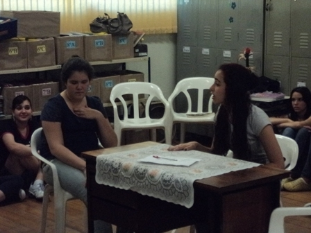

A sala dos professores é um espaço fundamental em qualquer escola, onde educadores se reúnem não apenas para descansar, mas também para compartilhar conhecimento, trocar experiências e discutir estratégias de ensino. É um local que desempenha um papel crucial na vida escolar, promovendo a interação entre os professores e contribuindo para o aprimoramento da qualidade do ensino.
Na Escola Francisco Piccolomini, uma instituição municipal localizada na cidade de Mogi Mirim, a sala dos professores é um ambiente acolhedor e inspirador. Ela reflete o compromisso da escola em oferecer um espaço de trabalho confortável e produtivo para seus educadores.
A sala dos professores dessa escola é um lugar onde se respira educação. As paredes estão decoradas com murais que exibem o talento artístico dos alunos, enquanto prateleiras exibem livros didáticos e materiais pedagógicos. Uma grande mesa central proporciona um local para reuniões, discussões e planejamento, onde ideias são compartilhadas e soluções são encontradas para os desafios do ensino.
O espaço também é equipado com computadores e impressoras para auxiliar os professores em suas tarefas administrativas e na preparação de materiais didáticos. Há uma área com cadeiras e mesas onde os educadores podem corrigir provas, preparar aulas e se dedicar à sua formação contínua.
Além disso, a sala dos professores da Escola Francisco Piccolomini é um refúgio tranquilo, um local onde os educadores podem relaxar durante os intervalos, tomar um café e conversar sobre suas experiências no ensino. Esses momentos de interação informal são preciosos, pois promovem o compartilhamento de estratégias e práticas bem-sucedidas, fortalecendo o senso de comunidade entre os professores.
Em resumo, a sala dos professores da Escola Francisco Piccolomini é mais do que um espaço físico; é um local de convergência de conhecimento, colaboração e construção de uma educação de qualidade. É onde os educadores se reúnem para nutrir o aprendizado dos alunos e se aprimorar como profissionais, tornando-se uma parte vital do ambiente educacional desta renomada instituição em Mogi Mirim.